まずは sales テーブルをおさらい
この章では、sales という名前のテーブルにデータを入れて、そこから中身を取り出していきます。テーブルは前章で見た「2次元の表」のことですね。
テーブルの名前やカラム（列）の名前は、日本語を付けられる RDBMS もありますが、どんな RDBMS でも動く SQL文にするため、英語の名前を付けておくのがおすすめです。
sales テーブルには 5 つのカラムがあります👇
sales テーブル。緑がカラム名、オレンジがその意味。以降はこの表からデータを取り出します。SELECT文でデータを取り出す
データベースで いちばん多い操作が、データの取り出しです。ショッピングサイトで商品の一覧や詳細を表示するときも、裏ではデータベースから取り出したデータを見せています。
データを取り出すには SELECT文を使います。
SELECT * FROM テーブル名;
「*（アスタリスク）」は「そのテーブルのすべてのカラムを取り出す」という指定。FROM のあとに操作するテーブル名を書きます。SQL文の終わりには必ず 「;（セミコロン）」を付ける決まりで、付け忘れるとエラーになるので注意です。
sqlite3 開きたいDB名 で起動します。ここでは sample.db を開きます。
-- プロンプトが sqlite> に変われば起動成功
起動したら、次の SQL文を実行すると sales テーブルからデータを取り出せます。
📋 出力の表示形式を見やすくする
取り出した結果を見やすくするために、ヘッダー（カラム名）を表示したり、表示モードを「カラム」にして整列させたりできます。
.header on でカラム名を表示、.mode column で列をそろえて表示します。設定したあと、もう一度 SELECT * FROM sales; を実行してみましょう。
-- ヘッダー（カラム名）を表示する
sqlite> .mode column
-- 表示モードをカラム（整列）にする
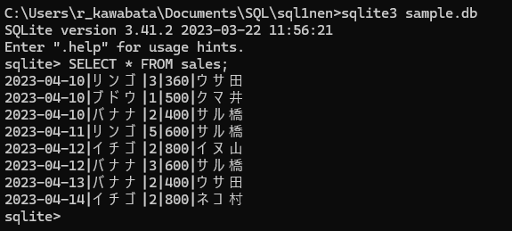
SELECT * FROM sales; の結果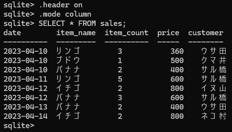
.header on＋.mode column 後の結果💡 ちょっと注意
カラムモードで表示するとき、全角のひらがなや漢字が混ざっていると、表示が少しズレて見えることがあります（幅の計算のため）。
また、.exit で終了して次に起動したときは、また見にくい表に戻ります。そのつど .header on／.mode column をもう一度実行しましょう。
欲しいカラムだけ取り出す
SELECT のあとに 「*」を入れると全カラムを取り出しますが、特定のカラムだけ取り出したいときは、SELECT のあとにカラム名を書きます。
SELECT カラム名 FROM テーブル名;
テーブルの1マスに入る個々のデータは 値 と呼びます。sales テーブルから、customer カラムの値を取り出してみましょう。
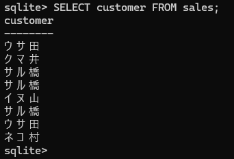
customer カラムだけを取り出した結果🧹 重複した値を取り除く（DISTINCT）
カラム名の前に DISTINCT（ディスティンクト）を入れると、重複した値を取り除いて取り出せます。
SELECT DISTINCT カラム名 FROM テーブル名;
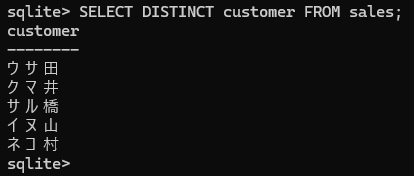
DISTINCT で重複を取り除いた結果➕ 複数のカラムを取り出す
カラム名は 「,（カンマ）」で区切ると複数指定でき、書いた順番に取り出せます。
SELECT カラム名1, カラム名2, … FROM テーブル名;

カラム数が多いテーブルで全部を取り出すと、目的のデータを探すのが大変。取り出したいデータが決まっているなら、カラム名を指定したほうが見やすくなります。
🧩 「文」と「句」
句には「文中の言葉のひと区切り」という意味があり、SQL文は複数の「句」をつなげて1つの「文」を表しています。
💡 コラム：SQL文は途中で改行できる
SQL文は ; が入力されるまで、Enter を押しても改行されるだけで実行されません。だから途中で改行を入れてもOKです。
ただし、SELECT や FROM などのキーワードやカラム名を 単語の途中で改行すると、実行時にエラーになります。
...> FROM sales;
...> count FROM sales;
-- item_count を途中で改行してしまっている
AS で見出しに別名をつける
結果のヘッダーに出るカラム名は、AS キーワードを使うと 一時的に別の名前を付けられます。別名を付けたいカラム名のうしろに AS 別名 と書きます。
SELECT カラム名 AS 別名 FROM テーブル名;
item_name カラムに「商品名」という別名を付けてみましょう。
この AS で付けた別名は エイリアス（alias）とも呼ばれ、「エイリアスを付ける」とも言います。, で区切れば 複数のカラムにエイリアスを付けられます。
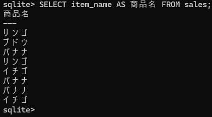
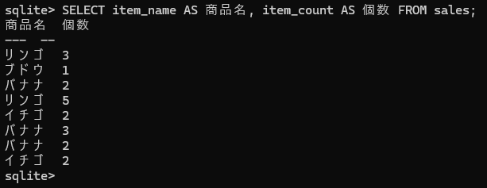
💡 コラム：別名に記号を使う場合
記号を使ったエイリアスを付けたいときは、別名を 「"（ダブルクォーテーション）」で囲みます。たとえば < > を使った別名は、囲まないとエラーになり実行に失敗します。
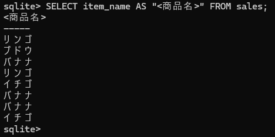
"<商品名>" のように囲めばOKWHERE句で条件をつけて取り出す
取り出すデータに条件を付けたいときは、FROM 句のあとに WHERE句を続けて、条件を指定します。データ量が多いデータベースでは、条件を付けて取り出すのが一般的です。
SELECT * FROM テーブル名 WHERE 条件式;
次の SQL文は、item_name カラムが「リンゴ」のデータだけを取り出します。条件に使う値が 文字列のときは「'（シングルクォーテーション）」で囲みます。
WHERE は「条件に合う行だけをこし取る」フィルターのイメージ。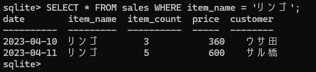
WHERE item_name = 'リンゴ' が WHERE句、item_name = 'リンゴ' の部分が 条件式です。
⚖️ いろいろな比較演算子=（イコール）のような、左右の値を比べる記号を 比較演算子と呼びます。
item_count（個数）が 2 より大きいデータを取り出してみます。
次は <> を使って「item_name がリンゴと違う」という条件にしてみます。
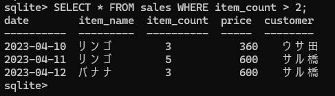
2 の実行結果">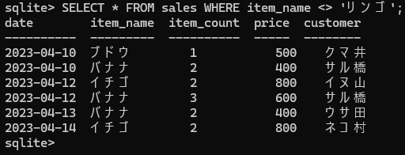
'リンゴ' の実行結果">📅 日付データを条件に使う
日付が決まった形式で入っていれば、比較演算子で期間を指定できます。sales の date は、4桁の年・2桁の月・2桁の日を - で区切った yyyy-mm-dd 形式です（y=year 年、m=month 月、d=day 日）。
date >= '2023-04-11' は「dateの値が 2023-04-11 以上」という意味。
date > '2023-04-11' は「dateの値が 2023-04-11 より大きい（あと）」という意味。
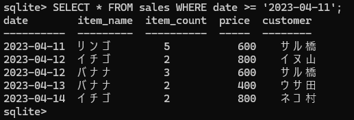
= '2023-04-11' の実行結果">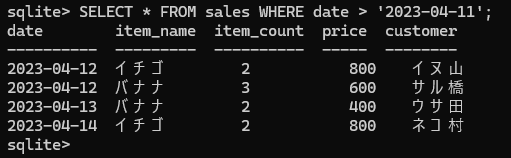
'2023-04-11' の実行結果">AND・OR・NOT で条件を組み合わせる
論理演算子を使うと、複数の条件を組み合わせた条件式を作れます。よく使うのが AND・OR・NOT の3つです。
🟣 AND 演算子（かつ）。左右の条件を どちらも満たすデータを取り出します。
WHERE 条件式1 AND 条件式2WHERE customer = 'サル橋' AND item_name = 'バナナ';
「サル橋さん」で、かつ「バナナ」——つまり サル橋さんがバナナを買った情報だけを取り出します。
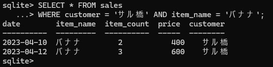
🟠 OR 演算子（もしくは）。左右の条件の どちらかを満たすデータを取り出します。
WHERE 条件式1 OR 条件式2WHERE item_name = 'リンゴ' OR item_name = 'ブドウ';
item_name が「リンゴ」もしくは「ブドウ」のデータを取り出します。
🔴 NOT 演算子（ではない）。AND・OR とは少し違い、右にある条件式を満たさないデータを取り出します。
WHERE NOT 条件式NOT item_name = 'リンゴ' は「item_name がリンゴ ではない」——リンゴ以外のデータを取り出します。
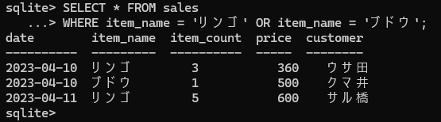
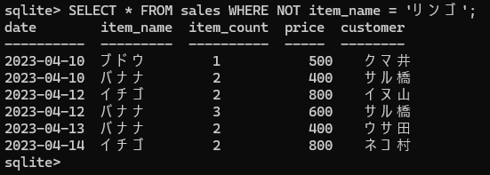
演算子の優先順位とカッコ
複数の演算子を組み合わせると、複雑な条件が作れます。ただし 演算子には優先順位があり、注意が必要です。ふつうは左から右に処理しますが、優先順位が違う演算子があると、優先順位の高いほうから実行されます。
OR と AND を組み合わせた条件です。AND のほうが優先順位が高いので、先に AND が処理されます。
WHERE customer = 'サル橋' OR customer = 'ウサ田'
AND item_name = 'リンゴ';
customer = 'ウサ田' AND item_name = 'リンゴ' が先に処理され、そのあとで customer = 'サル橋' と OR で結ばれます。
カッコで優先順位を変える。優先順位の低い演算子を先に処理させたいときは、その部分を カッコで囲みます。
WHERE (customer = 'サル橋' OR customer = 'ウサ田')
AND item_name = 'リンゴ';
カッコで囲んだだけで結果が変わります。「サル橋 もしくは ウサ田」で、かつ「リンゴ」のデータになります。
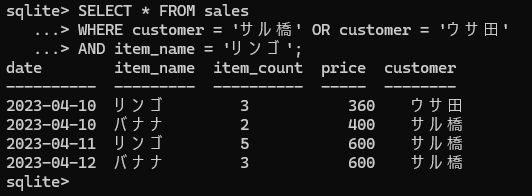
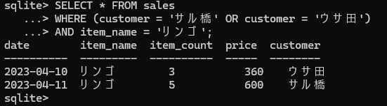
💡 コラム：「=」と「==」
比較演算子の = は、右辺と左辺が同じかを判定します。SQLite では == も = と同じはたらきをします。
ただし == が使えるのは SQLite だけで、MySQL など他の RDBMS では使えません。どの RDBMS でも通じる書き方を身につけるため、== ではなく = を使いましょう。
IN・BETWEEN で範囲やリストを指定
もっと便利な条件式も見ておきましょう。リストのどれかや 範囲を、すっきり書ける演算子です。
📝 IN 演算子。複数の値の いずれかに一致するものを取り出すときに便利。カラム名のあとに IN と続け、カッコ内に探したい値を , で並べます。カッコ内のデータは リストと呼ばれます。
WHERE カラム名 IN (データ1, データ2, …)
item_name が「リンゴ」もしくは「イチゴ」のデータを取り出します。= と OR で書き換えると次と同じです👇
WHERE item_name = 'リンゴ' OR item_name = 'イチゴ';
🚫 NOT IN 演算子。逆に、リストの どれにも一致しないデータを取り出します。書き方は IN と同じです。
WHERE カラム名 NOT IN (データ1, データ2, …);
<> と AND で書き換えると次と同じです。
WHERE item_name <> 'リンゴ' AND item_name <> 'イチゴ';
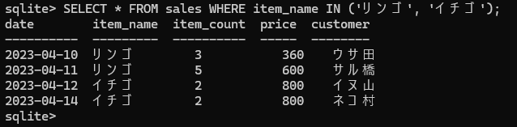
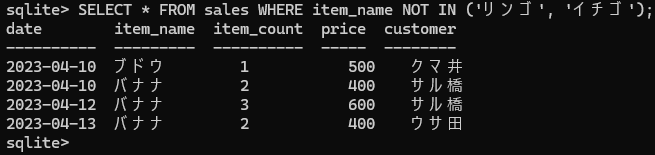
📏 BETWEEN 演算子。数や日付で 特定の範囲を指定するときに使います。カラム名のあとに BETWEEN を入れ、範囲の値を AND でつなぎます。ここでの AND は「かつ」ではなく 「から」という意味に変わります。
WHERE カラム名 BETWEEN 値1 AND 値2;
BETWEEN は「両端を含む」範囲指定。始まりと終わりの日も入ります。WHERE date BETWEEN '2023-04-11' AND '2023-04-13';
>= と <= で書き換えると次と同じ（04-11 以上 かつ 04-13 以下）。
WHERE date >= '2023-04-11' AND date <= '2023-04-13';
🚫 NOT BETWEEN 演算子。逆に、指定した 範囲外のデータを取り出します。書き方は BETWEEN と同じです。
WHERE カラム名 NOT BETWEEN 値1 AND 値2;
NOT BETWEEN は範囲の 外側 だけを取り出す。両端（04-11・04-13）も含まれません。WHERE date NOT BETWEEN '2023-04-11' AND '2023-04-13';
「04-11 から 04-13 の間以外」という条件。< と > と OR で書き換えると次と同じ（04-11 より小さい、もしくは 04-13 より大きい）。
WHERE date < '2023-04-11' OR date > '2023-04-13';
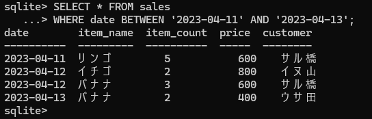
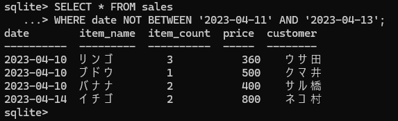
まとめ：この章で覚えた文法
おつかれさまでした🎉 第2章では、データを 取り出すための道具がたくさん登場しました。ぜんぶ SELECT文 の仲間です。